📅 8 日行程總覽
- 🚄 交通：桃園起飛 → 法蘭克福機場抵達；ICE 高鐵 法蘭克福 → 愛爾福特 → 德累斯頓
- 🏨 住宿：德累斯頓
- 愛爾福特短暫停留，感受中世紀磚造城市氛圍
- 抵達德累斯頓，沿易北河畔初探古都夜景
- 🚌 交通：巴士 / 火車前往薩克森小瑞士（車程約 1 小時），當日來回
- 🏨 住宿：德累斯頓
- 上午：聖母教堂 Frauenkirche、茨溫格宮 Zwinger、布呂爾平台
- 下午：薩克森小瑞士國家公園 → 巴斯泰橋 Basteibrücke 健行覽景
- 🚆 交通：區間火車 德累斯頓 ↔ 麥森（車程約 40 分鐘）
- 🏨 住宿：德累斯頓
- 麥森瓷器工廠 & 博物館，探索歐洲瓷器發源地
- 阿爾布雷希特城堡 Albrechtsburg 俯瞰易北河谷
- 傍晚返回德累斯頓，古城夜間散步
- 🚄 交通：ICE 高鐵 德累斯頓 → 紐倫堡（車程約 2.5 小時）
- 🏨 住宿：紐倫堡
- 皇帝堡 Kaiserburg & 舊城區漫遊
- 市集廣場、聖母教堂外觀、工匠廣場
- 品嚐傳統薑餅與紐倫堡烤香腸
- 🚄 交通：ICE 高鐵 紐倫堡 → 慕尼黑（約 1 小時）；山岳鐵道登楚格峰
- 🏨 住宿：慕尼黑
- 楚格峰（2962 m）搭纜車登頂，眺望德奧邊境全景
- 加爾米施帕滕基興 Garmisch-Partenkirchen 小鎮漫步
- 🚇 交通：慕尼黑市區步行 / U-Bahn
- 🏨 住宿：慕尼黑
- 瑪麗恩廣場 Marienplatz、新市政廳木偶鐘整點表演
- 穀物市場 Viktualienmarkt、聖彼得教堂、舊市政廳
- 晚間：皇家啤酒屋 Hofbräuhaus 體驗道地巴伐利亞晚餐
- 🚇 交通：慕尼黑市區步行 / U-Bahn
- 🏨 住宿：慕尼黑
- 英式花園 Englischer Garten 晨間散步
- 維克圖阿立恩市場 Viktualienmarkt 採買伴手禮
- 自由行購物，享用最後一頓巴伐利亞晚餐
- 🚌 交通：前往慕尼黑機場搭機 → 桃園國際機場
- 早餐後退房，前往機場辦理登機手續
- 結束 8 天德國旅程，滿載美好記憶返台
🗺️ 旅行地圖
2024 年 10 月 17–24 日 ｜ 法蘭克福 → 德累斯頓 → 紐倫堡 → 慕尼黑
🚉 交通路線摘要
📖 路線與歷史
✈️ 法蘭克福 Frankfurt am Main
法蘭克福之名源自「法蘭克人的渡口」（Franconofurt），西元 794 年查理曼大帝在此召開帝國議會， 奠定了城市作為帝國行政核心的地位。此後數百年，神聖羅馬帝國的皇帝選舉與加冕慶典長期在此舉行， 聖巴托羅繆大教堂（Kaiserdom）至今仍見證著那段歷史。
文豪歌德（Johann Wolfgang von Goethe）1749 年出生於此，故居現為博物館。 二戰時舊城遭嚴重轟炸，戰後依原貌重建的羅馬廣場（Römerberg）是德國最具代表性的城市廣場之一， 其木構排屋外立面已成法蘭克福的標誌。現代的法蘭克福是歐盟中央銀行所在地， 金融摩天樓群與中世紀廣場並存，形成獨特的城市景觀。
✨ 歷史亮點
• 794 年查理曼帝國議會召開地
• 神聖羅馬帝國歷代皇帝加冕慶典舉辦地（1562–1806）
• 文豪歌德出生地，故居保存至今
• 羅馬廣場木構古宅為城市地標，戰後依原貌重建
• 現為歐盟中央銀行（ECB）總部所在城市
📍 愛爾福特 Erfurt
愛爾福特建城於西元 742 年，是德國圖林根邦的首府，也是中世紀歐洲最重要的商業城市之一。 城市以貿易菘藍（Woad，一種藍色染料植物）聞名全歐，帶來的財富造就了宏偉的大教堂與密集的橋上商店街。
最特別的是，馬丁‧路德（Martin Luther）曾在此就讀大學並進入奧古斯丁修道院， 愛爾福特因此成為宗教改革的重要起點之一。 二戰期間城市相對完好，至今保留了大量中世紀建築原貌，是德國保存最完整的古城之一。
✨ 歷史亮點
• 742 年建城，圖林根邦首府
• 馬丁‧路德就讀大學與修道院的城市
• 克雷默橋（Krämerbrücke）是歐洲現存最長、仍有人居住的橋上建築群
• 二戰保存完整，老城街道至今如中世紀般風貌
📍 德累斯頓 Dresden
德累斯頓素有「易北河上的佛羅倫斯」之稱，18 世紀薩克森選侯奧古斯特二世廣聚藝術珍品， 使這座城市成為巴洛克建築與藝術的殿堂。茨溫格宮、聖母教堂與森珀歌劇院都是那個黃金年代的產物。
1945 年 2 月，盟軍大規模空襲使整座城市陷入火海，教堂在高溫中撐了兩天後倒塌， 廢墟保留了 45 年。兩德統一後，德累斯頓開始漫長的重建工程， 將原本倒塌的石塊一一標記、重新拼回原位，深色的舊石與淺色新石 混合成為「記憶的拼圖」，見證戰爭與和解。
✨ 歷史亮點
• 18 世紀薩克森選侯的巴洛克藝術首都
• 1945 年大轟炸——二戰最具爭議的空襲之一
• 聖母教堂重建歷時 13 年（1994–2005），成為和解象徵
• 舊舊石新石交錯的外牆，是城市歷史的最佳縮影
📍 薩克森小瑞士 Sächsische Schweiz
薩克森小瑞士是易北河流經德國東部時雕琢出的砂岩峽谷地形， 億萬年的風化與侵蝕造就了層層疊疊的砂岩柱與峽谷。 18 世紀瑞士藝術家因其地形與家鄉相似，稱之為「小瑞士」，名稱由此而來。
巴斯泰橋（Basteibrücke）建於 1851 年，是世界上最早的砂岩橋之一， 橫跨在 194 公尺高的峭壁之上，橋下可見綿延無盡的森林與易北河谷。
✨ 地理亮點
• 砂岩形成於約 9000 萬年前白堊紀海底
• 巴斯泰橋高度 194 公尺，建於 1851 年
• 此地為德國第一座國家公園（1990 年設立）
📍 麥森 Meissen
麥森是薩克森最古老的城市之一，西元 929 年由神聖羅馬帝國皇帝亨利一世建立， 作為德意志向東擴展的要塞。
1710 年，奧古斯特二世將煉金術師伯特格爾（Johann Friedrich Böttger）軟禁於阿爾布雷希特城堡， 命其研製黃金。伯特格爾雖未煉出黃金，卻意外發現了硬質瓷器的配方， 麥森從此成為「歐洲白色黃金」的誕生地，瓷器工廠延續至今已逾 300 年。
✨ 歷史亮點
• 929 年建城，薩克森最古老城市之一
• 1710 年歐洲第一個成功燒製硬質瓷器的地方
• 麥森瓷器品牌標誌「雙劍」沿用至今
• 阿爾布雷希特城堡是德國最早的哥德式世俗建築之一
📍 紐倫堡 Nürnberg
紐倫堡自中世紀起即是神聖羅馬帝國的重要城市，歷代皇帝以此為重要行宮， 皇帝堡也成為帝國權威的象徵。城市以精緻手工藝聞名——玩具、薑餅與香腸都是流傳數百年的名產。
二戰期間，紐倫堡因納粹黨在此召開盛大黨代會而聞名於世。 戰後，同盟國選擇在此舉行著名的「紐倫堡審判」（1945–1946）， 正式確立了戰爭罪行的國際法律框架。
✨ 歷史亮點
• 中世紀神聖羅馬帝國皇帝的行宮所在地
• 納粹黨大會場地（1933–1938）
• 二戰後「紐倫堡審判」奠定現代國際刑法基礎
• 聖誕市集傳統可追溯至 1628 年
📍 慕尼黑 München ＆ 楚格峰 Zugspitze
慕尼黑建於 1158 年，是巴伐利亞王國的首府，也是德國第三大城市。 「慕尼黑」之名源自古德語「僧侶之地」（Munichen），反映了城市的修道院起源。 19 世紀巴伐利亞王國在此打造了豐富的博物館與宮殿群，奠定今日文化首都的地位。
楚格峰（Zugspitze，2962 公尺）是德國最高峰，位於巴伐利亞阿爾卑斯山脈， 德奧邊境之上。山頂可同時望見德國、奧地利、瑞士與義大利四國風光。 加爾米施帕滕基興（Garmisch-Partenkirchen）小鎮是 1936 年冬季奧運的舉辦地。
✨ 歷史亮點
• 1158 年建城，巴伐利亞首府
• 1923 年希特勒「啤酒館政變」發生於此
• 1972 年夏季奧運主辦城市
• 楚格峰高 2962 公尺，德國最高峰
• 加爾米施為 1936 年冬季奧運場地
🏰 景點介紹與特色
✈️ 法蘭克福 Frankfurt am Main
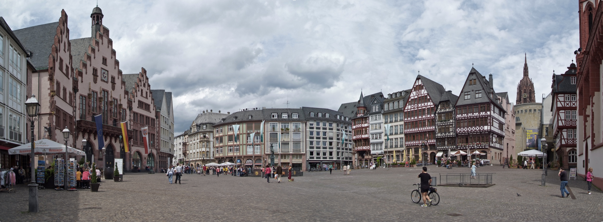
🏛️ 羅馬廣場 Römerberg
法蘭克福最古老的中心廣場，中世紀三座山形屋頂市政廳（Römer）是城市的象徵建築。 廣場周邊的木構彩色半木屋雖是戰後依原貌重建，但仍完整還原了中世紀的街道氛圍。 廣場中央的正義女神噴泉（Justitiabrunnen）是必拍地標。
✨ 必看亮點
• 三棟相連的山形市政廳外觀
• 廣場周邊彩色木構半木屋排列
• 正義女神噴泉與石板廣場
💡 旅行建議
• 搭乘 ICE 前可步行至羅馬廣場，約 15 分鐘車程
• 法蘭克福中央車站（Hauptbahnhof）為德鐵重要樞紐，ICE 四通八達
📍 愛爾福特 Erfurt
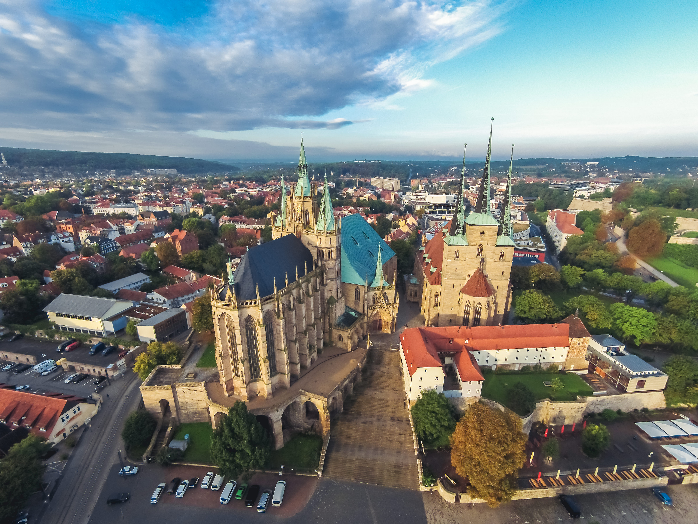
⛪ 愛爾福特大教堂 & 聖塞維魯教堂
愛爾福特大教堂與聖塞維魯教堂並列在高處的台階上，是城市天際線的象徵。 哥德式與羅馬式建築交錯，內部彩繪玻璃與聖壇雕刻都極為精緻。 馬丁‧路德曾在此就讀大學並進入修道院，是宗教改革的重要起點之一。
✨ 必看亮點
• 教堂前 70 級巨大台階與廣場景觀
• 中世紀彩繪玻璃與祭壇雕刻
• 夜間打燈後的教堂剪影
💡 小提醒
• 建議黃昏時分造訪，順便欣賞日落與夜景
• 教堂內多為免費參觀，捐獻箱可自由樂捐
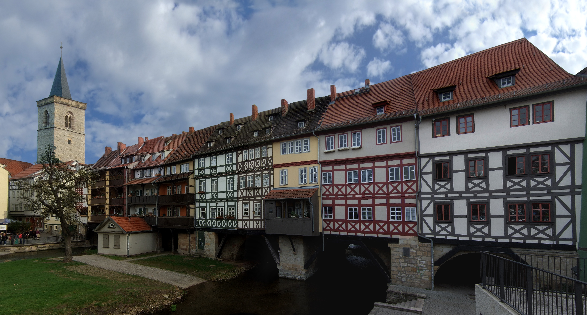
🌉 克雷默橋 Krämerbrücke & 舊城區
克雷默橋是歐洲少數仍有人居住的「橋上街道」，兩側連棟木構房屋一樓是商店、 二樓以上是住宅，全橋長 79 公尺，現存 32 棟建築。附近舊城區小巷充滿咖啡館與特色小店。
✨ 必看亮點
• 橋上古老木屋與彩色外牆
• 手工藝品與特色小店，適合慢逛
• 河畔視角拍攝整座橋全景
📍 德累斯頓 Dresden
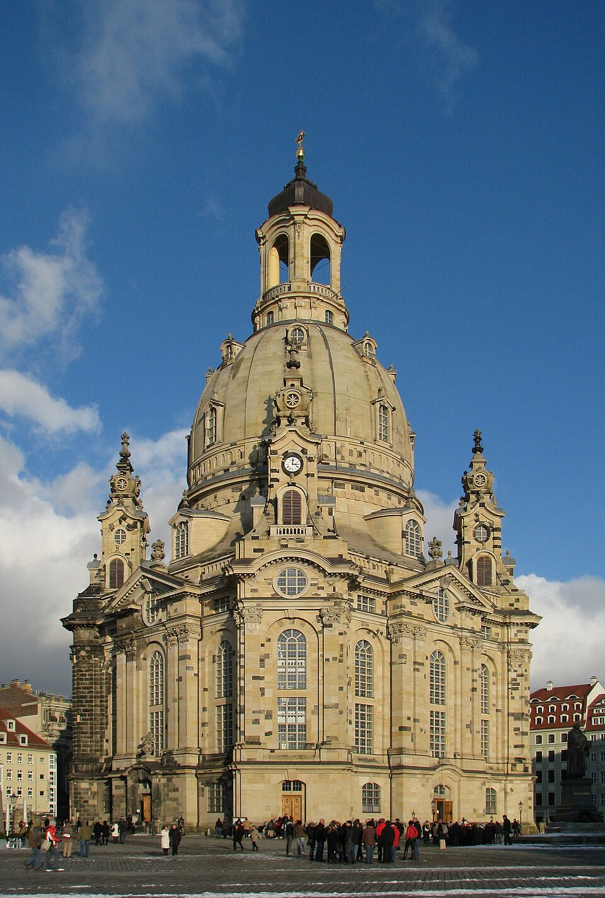
⛪ 聖母教堂 Frauenkirche
聖母教堂是德累斯頓重生的象徵。1945 年盟軍空襲後廢墟保留了 45 年， 重建時刻意保留舊石塊與新石交錯的外牆，深色舊石與淺色新石形成「記憶的拼圖」。 登頂圓形觀景台可俯瞰整座老城與易北河全景。
✨ 必看亮點
• 黑白相間的外牆——戰爭與和解的縮影
• 教堂內部穹頂壁畫與環形空間
• 圓頂觀景台 360° 老城全景
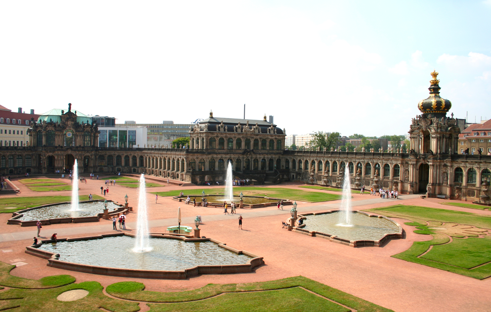
🏛️ 茨溫格宮 Zwinger & 布呂爾平台 Brühlsche Terrasse
茨溫格宮是薩克森選侯奧古斯特二世於 18 世紀建造的巴洛克宮殿庭園， 內設古典繪畫陳列館、瓷器收藏館與數學物理沙龍博物館。 布呂爾平台是俯瞰易北河的城市陽台，素有「歐洲陽台」之稱。
✨ 必看亮點
• 宮殿庭園的噴泉廣場與仙女塔
• 古典繪畫陳列館（拉斐爾《西斯廷聖母》真跡）
• 布呂爾平台沿易北河漫步，欣賞城市輪廓
📍 薩克森小瑞士 & 巴斯泰橋
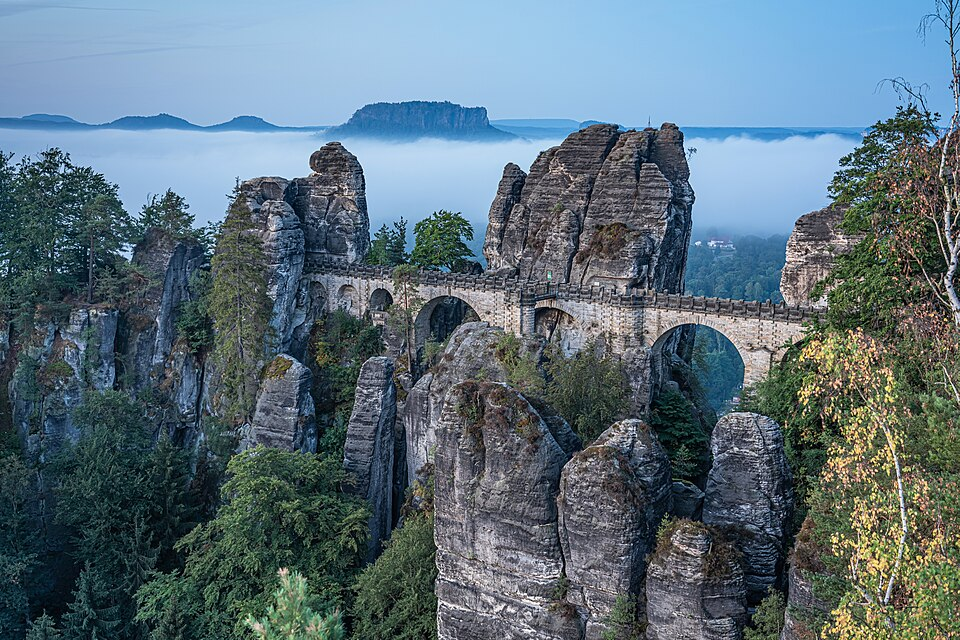
🌄 巴斯泰橋 Basteibrücke & 薩克森小瑞士國家公園
砂岩峭壁間橫跨的石橋，底下是深邃峽谷與蒼鬱森林。 巴斯泰橋建於 1851 年，架設在 194 公尺高的砂岩岩柱之上， 清晨或黃昏時雲霧繚繞，是攝影絕佳地點，也是健行熱門路線。
✨ 必看亮點
• 巴斯泰橋懸空視角俯瞰峽谷
• 中世紀巴斯泰岩堡遺跡（Felsenburg Neurathen）
• 清晨雲霧繚繞的砂岩峰林景觀
💡 健行建議
• 步道坡度適中，預留半天時間
• 建議穿防滑鞋，峭壁邊緣注意安全
• 從德累斯頓搭 S-Bahn 或巴士，車程約 1 小時
📍 麥森 Meissen
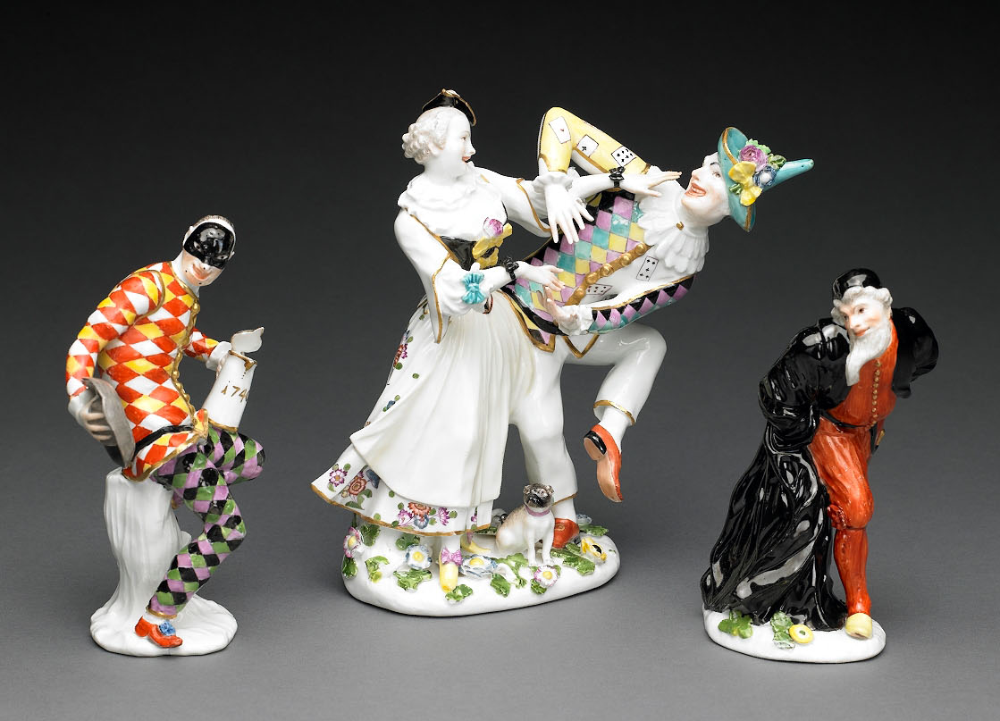
🍽️ 麥森瓷器工廠 & 博物館 Meissen Porcelain
麥森是歐洲最早成功燒製硬質瓷器的地方（1710 年），被稱為「白色黃金」。 工廠至今仍以全手工方式生產，博物館展示從成形、上釉到手繪的完整製作流程， 以及橫跨三百年的歷代皇家訂製作品。
✨ 必看亮點
• 現場觀摩瓷器拉坯、上釉、手繪工序
• 早期奧古斯特二世王室訂製瓷器展品
• 品牌標誌「雙劍」的由來說明
• 伴手禮店可購買小件瓷器紀念品
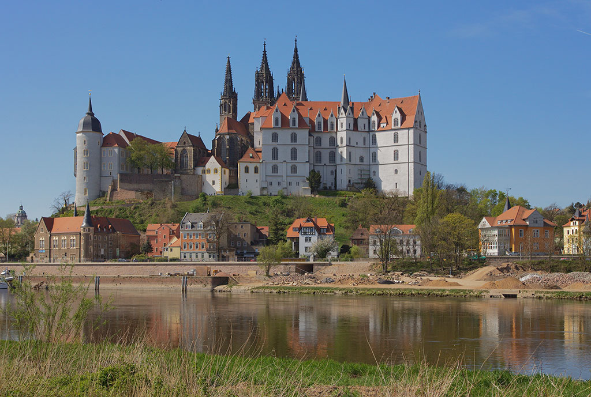
🏰 阿爾布雷希特城堡 Albrechtsburg
阿爾布雷希特城堡矗立在易北河畔山丘上，是薩克森選侯的宮殿， 也是麥森瓷器最初的生產地點（1710–1863）。 1470 年代動工，被視為德國最早的哥德式世俗宮殿建築之一，俯瞰整個麥森小鎮與易北河谷。
💡 參觀建議
• 預留 1.5–2 小時參觀城堡與內部展示
• 可搭配麥森瓷器工廠同日安排
📍 紐倫堡 Nürnberg
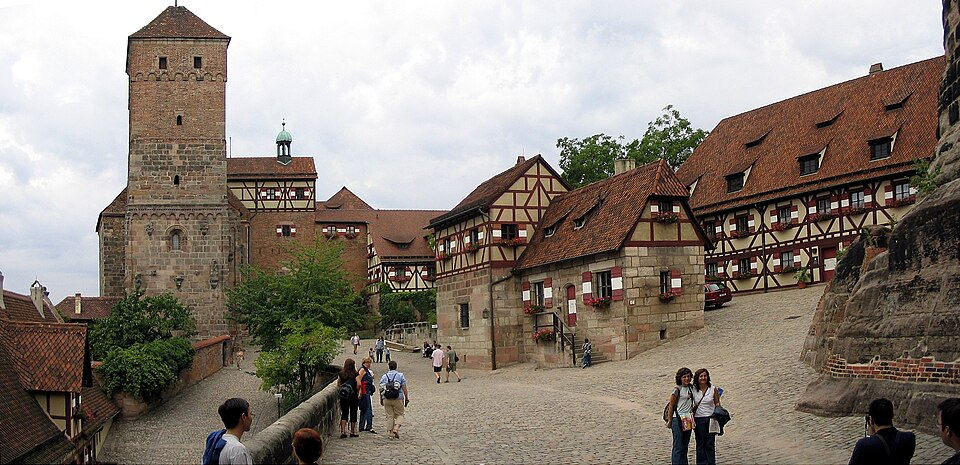
🏰 皇帝堡 Kaiserburg & 舊城區
皇帝堡坐落在城市制高點，是德意志皇帝歷代下榻的要塞，也是神聖羅馬帝國權威的象徵。 下方舊城區保留中世紀街道紋理，市集廣場（Hauptmarkt）、 聖母教堂與工匠廣場都是節慶與市集的中心。
✨ 必看亮點
• 皇帝堡城牆與辛維爾塔（Sinwellturm）觀景台
• 市集廣場（Hauptmarkt）與美麗噴泉（Schöner Brunnen）
• 工匠廣場手工藝品市集
• 傳統薑餅（Lebkuchen）與紐倫堡烤香腸
📍 慕尼黑 München
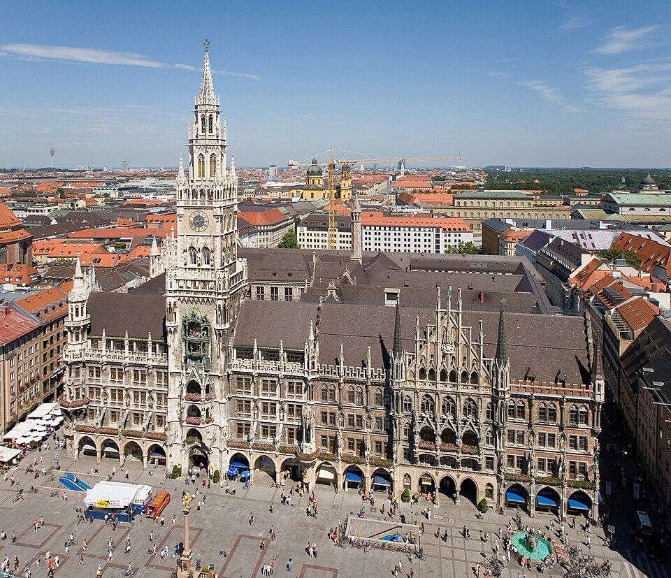
🏛️ 瑪麗恩廣場 Marienplatz & 新市政廳
慕尼黑的心臟廣場，自 1158 年建城以來便是城市核心。新市政廳哥德復興式外觀氣勢恢宏， 每天 11:00 與 12:00 整（夏季加 17:00）鐘琴報時秀中 32 個人偶依序起舞， 敘述巴伐利亞歷史故事。
✨ 必看亮點
• 鐘琴報時表演（11:00、12:00，夏季加 17:00）
• 登市政廳塔樓俯瞰全城
• 廣場周邊步行商店街 Kaufingerstraße
💡 旅行建議
• 建議提早 15–20 分鐘卡位，人多遮擋視線
• 可安排與聖彼得教堂、維克圖阿立恩市場同日路線
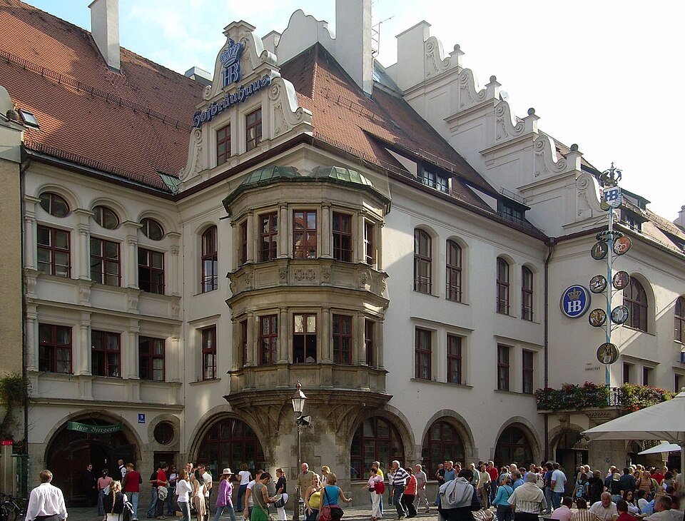
🍺 皇家啤酒屋 Hofbräuhaus
1589 年由巴伐利亞公爵威廉五世創立，原為宮廷御用釀酒廠。 傳統巴伐利亞音樂、長桌共食文化、1 公升大杯啤酒（Mass）是這裡的標誌， 每年吸引數百萬訪客，是體驗道地啤酒文化的最佳場所。
✨ 必看亮點
• 大廳可容納千人的長桌共食氛圍
• 現場巴伐利亞樂隊演奏
• 1 公升大杯啤酒（Mass）是標準配備
💡 用餐建議
• 晚餐時間較多人，建議提早到或避開尖峰
• 推薦點傳統豬腳或香腸拼盤搭配啤酒
• 留意酒精濃度與回程交通時間
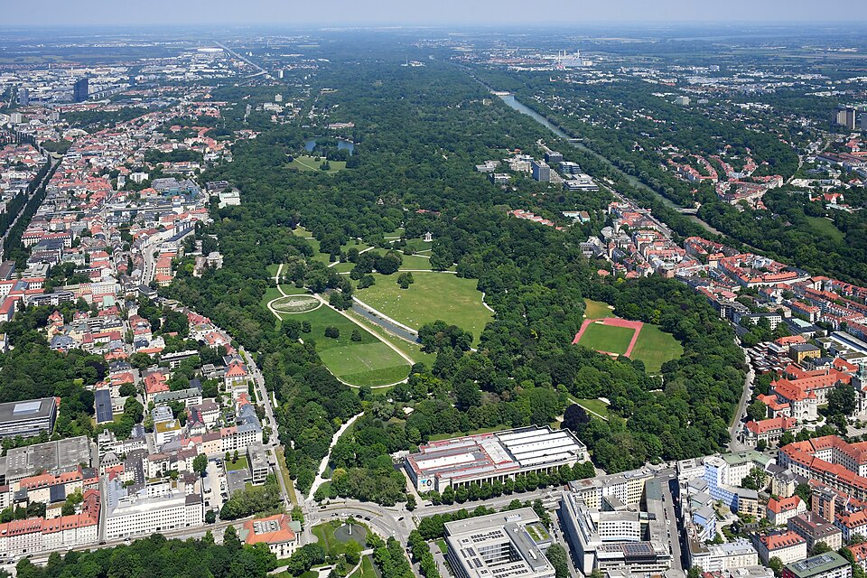
🌿 英式花園 Englischer Garten
面積約 3.7 平方公里，比紐約中央公園還大，是世界上最大的城市公園之一。 18 世紀末由拉姆福德伯爵規劃，採自然蜿蜒式英式景觀。 公園內的伊薩爾河（Eisbach）駐波是慕尼黑奇景——不論晴雨， 當地衝浪客在橋下的駐波上演出，已成城市的非官方符號。
✨ 必看亮點
• 伊薩爾河駐波衝浪奇景（Eisbach Surfer）
• 日式茶屋（Japanisches Teehaus）與月亮湖
• 中式塔（Chinesischer Turm）旁露天啤酒花園
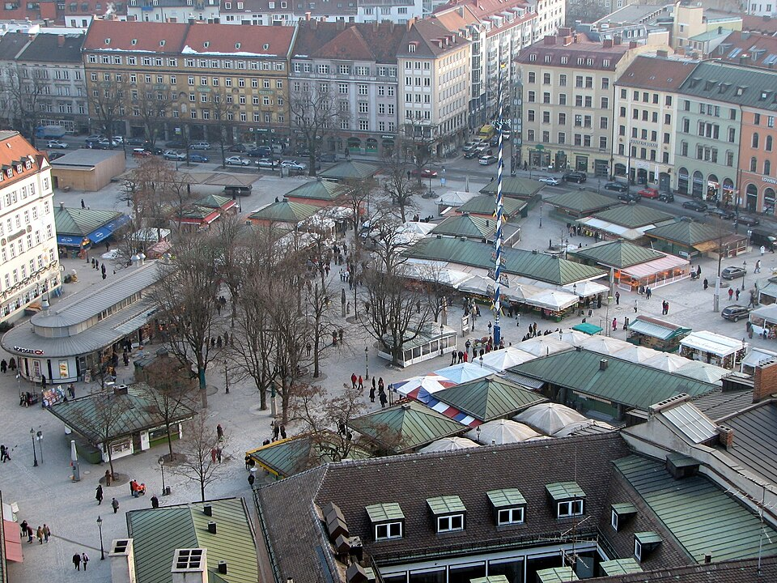
🥩 維克圖阿立恩市場 Viktualienmarkt
慕尼黑最古老的傳統市場，自 1807 年起每天開市（週日除外）。 生鮮蔬果、起司、香腸、麵包與花卉應有盡有， 中央露天啤酒花園是享用白香腸早餐與休憩的好地方。
✨ 必看亮點
• 五月柱（Maibaum）——色彩鮮豔的傳統裝飾柱
• 各攤位的手工起司與煙燻香腸
• 中央啤酒花園的白香腸早餐文化
💡 旅行建議
• 週六上午人潮最旺，生鮮品項最豐富
• 與瑪麗恩廣場相鄰，步行 3 分鐘可到達
• 伴手禮推薦：小包裝香料、蜂蜜或迷你瓷器
🏔️ 楚格峰 Zugspitze ＆ 加爾米施 Garmisch-Partenkirchen
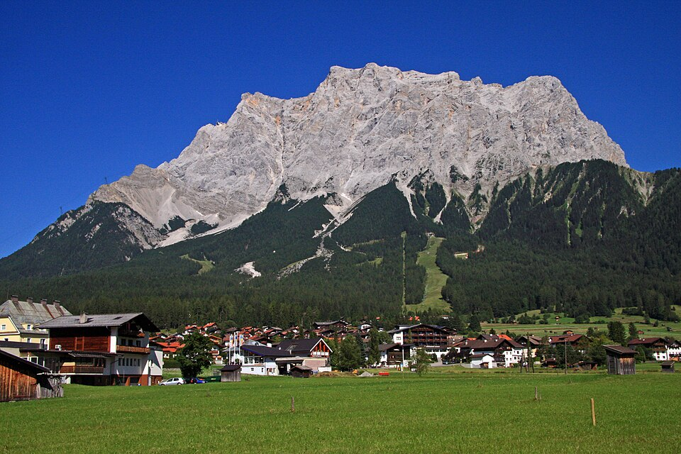
🏔️ 楚格峰 Zugspitze（2962 m）
德國最高峰，海拔 2962 公尺，位於德奧邊境。山頂橫跨兩國， 晴天可同時眺望德國、奧地利、瑞士與義大利四國景色，視野寬達 250 公里。 登頂可搭齒輪山岳鐵道（Zugspitzbahn）或從艾比湖（Eibsee）直達纜車兩種方式。
✨ 必看亮點
• 山頂金色十字架（Gipfelkreuz）與四國全景
• 山腰施奈費爾納冰河（北坡殘餘冰河）
• 山頂德奧邊界線標記
• 艾比湖（Eibsee）碧綠湖景
💡 旅行建議
• 山頂氣溫比山下低約 15–20°C，務必攜帶厚外套
• 建議上午出發，下午可能起霧影響視野
• 慕尼黑出發：ICE / S-Bahn 至加爾米施（約 1.5 小時）再轉山岳鐵道
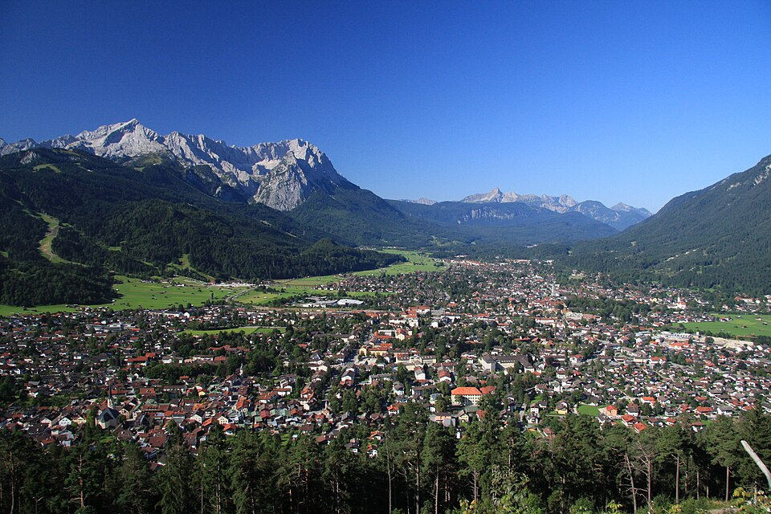
🏘️ 加爾米施帕滕基興 Garmisch-Partenkirchen
這座巴伐利亞小鎮因 1936 年冬季奧林匹克運動會而合併為一。 舊奧運會場遺址至今仍在，每年冬天有世界杯滑雪賽事在此舉行。 小鎮建築保有典型的「呂夫特爾彩畫」（Lüftlmalerei）傳統，房屋外牆彩繪宗教與日常場景。
✨ 必看亮點
• 舊城區彩繪外牆木屋（Lüftlmalerei）
• 1936 年冬奧會場遺址
• 帕滕基興舊城的中世紀街道
• 四周山景健行步道
景點圖片來源：Wikimedia Commons（CC 授權，各作者所有）
🎬 旅行影片
📅 10/17 法蘭克福坐高鐵 → 愛爾福特 → 德勒斯登
📅 10/18 德累斯頓 → 薩克森小瑞士 → 德累斯頓古城
📅 10/19 德累斯頓 → 麥森 → 德累斯頓古城
📅 10/20 紐倫堡
📅 10/21 楚格峰 · 加爾米施小鎮
📅 10/22 慕尼黑 · 瑪麗恩廣場 · 穀物市場 · 聖彼得教堂 · 新市政廳 · 舊市政廳 · 木偶鐘 · 皇家啤酒屋
📸 旅行照片集
📅 10/17 愛爾福特
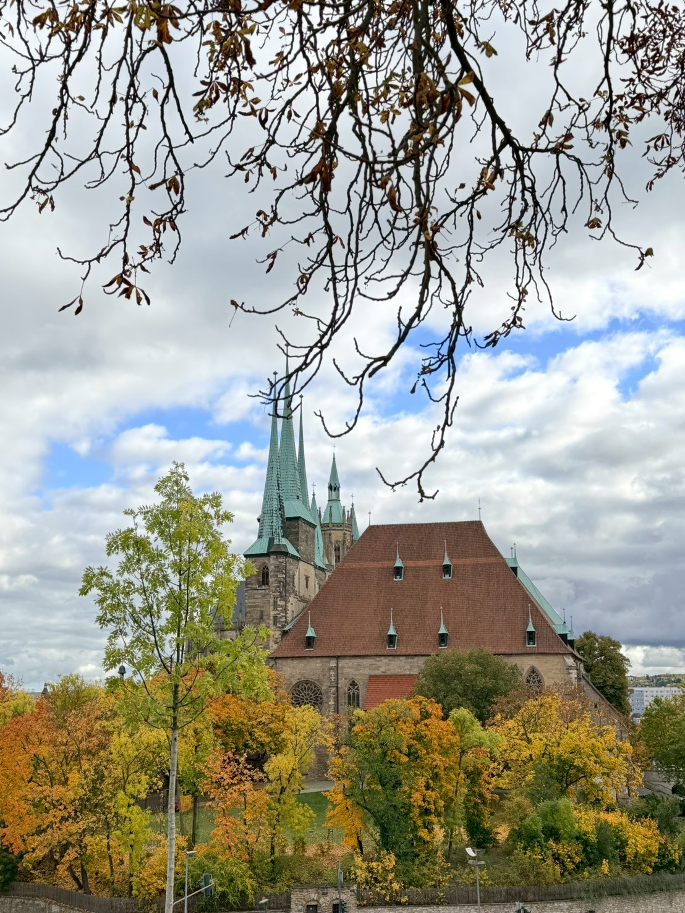
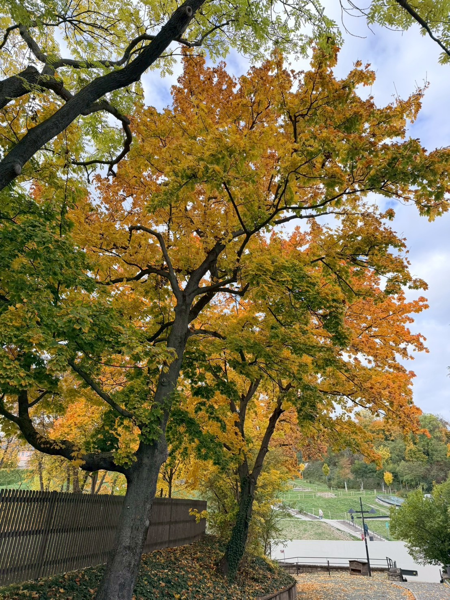
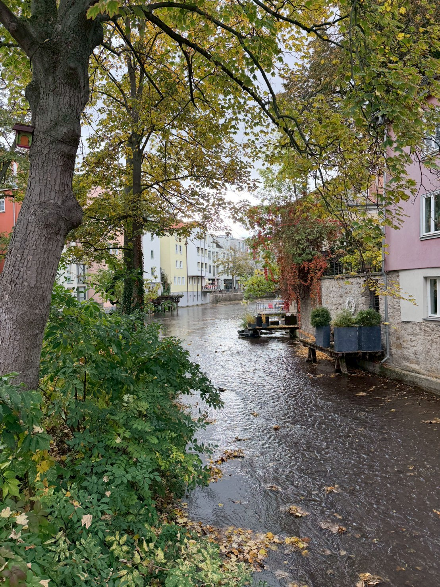
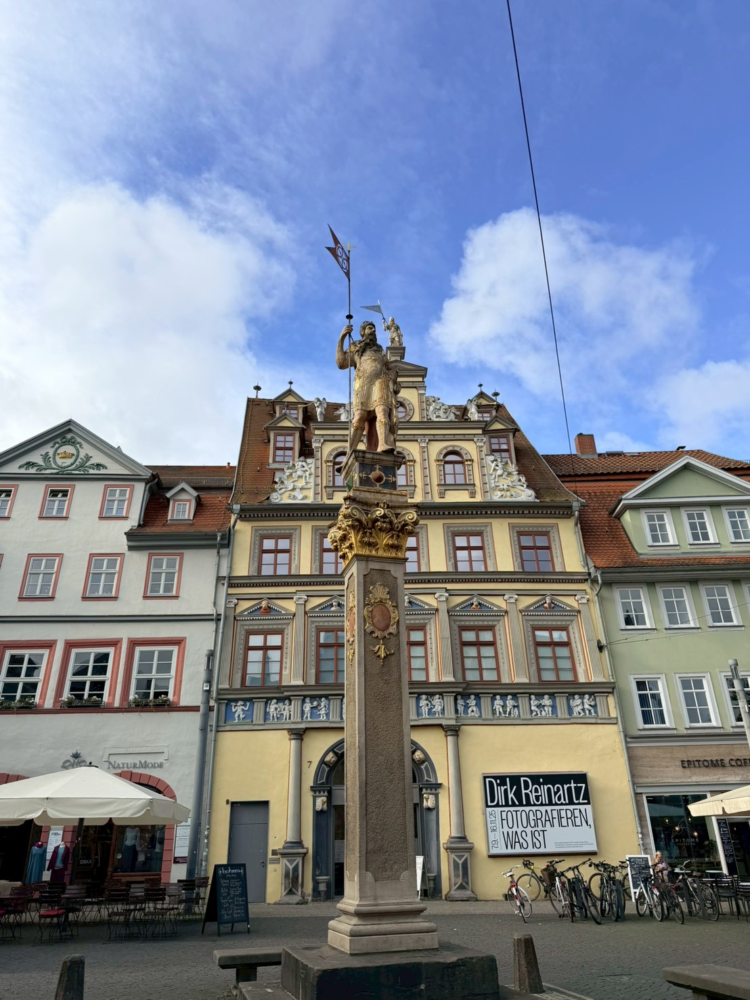
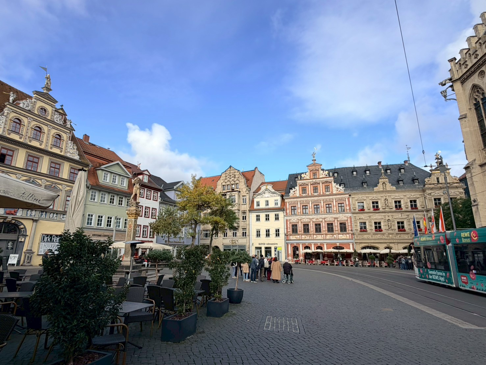